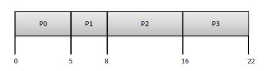
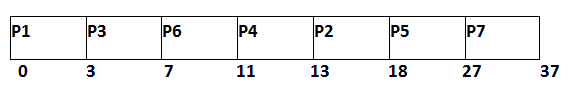
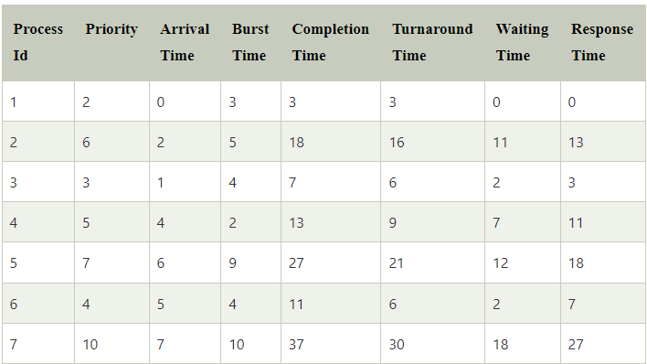

Scheduling of processes/work is done to finish the work on time.Below are different time with respect to a process.
Arrival Time: Time at which the process arrives in the ready queue.
Completion Time: Time at which process completes its execution.
Burst Time: Time required by a process for CPU execution.
Turn Around Time: Time Difference between completion time and arrival time.
Waiting Time(W.T): Time Difference between turn around time and burst time.
The Purpose of a Scheduling algorithm
- Maximum CPU utilization
- Fare allocation of CPU
- Maximum throughput
- Minimum turnaround time
- Minimum waiting time
- Minimum response time
There are six popular process scheduling algorithms
- First-Come, First-Served (FCFS) Scheduling
- Shortest-Job-Next (SJN) Scheduling
- Priority Scheduling
- Shortest Remaining Time
- Round Robin(RR) Scheduling
- Multiple-Level Queues Scheduling
First-Come, First-Served (FCFS) Scheduling
It is the simplest algorithm to implement. Processes are executed on first come, first serve basis i.e., the process with the minimal arrival time will get the CPU first.
The lesser the arrival time, the sooner will the process gets the CPU. It is the non-preemptive type of scheduling.
Its implementation is based on FIFO queue. The main drawback about this algorithem is that it is poor in performance as average wait time is high.
For example, Look at the information given in the table
| Process Id | Arrivel Time | Execute Time | Service Time |
|---|---|---|---|
| P0 | 0 | 5 | 3 |
| P1 | 1 | 3 | 0 |
| P2 | 2 | 8 | 8 |
| P3 | 3 | 6 | 16 |
When we calculate the Wait time we get,
| Process Id | wait time: Service time - Arrivel time |
|---|---|
| P0 | 0-0=0 |
| P1 | 5-1=4 |
| P2 | 8-2=6 |
| P3 | 16-3=13 |
Here Process P0 has the least waiting time. So, it enters the CPU first. Followed by P1, P2 and P3.
When we make a Gantt Chart we get,

Average Wait Time: (0+4+6+13) / 4 = 5.75
Click Here to try some examples by your self.
Shortest Job Next (SJN)
The job with the shortest burst time will get the CPU first. The lesser the burst time, the sooner will the process get the CPU. It is the non-preemptive type of scheduling. It is easy to implement in Batch systems where required CPU time is known in advance. But impossible to implement in interactive systems where required CPU time is not known, which is a major drawback The processer should know in advance how much time process will take. Like, from the example given below,
| Process Id | Arrivel Time | Execute Time | Service Time |
|---|---|---|---|
| P0 | 0 | 5 | 3 |
| P1 | 1 | 3 | 0 |
| P2 | 2 | 8 | 16 |
| P3 | 3 | 6 | 8 |
When we calculate the Wait time we get,
| Process Id | wait time: Service time - Arrivel time |
|---|---|
| P0 | 0-0=0 |
| P1 | 5-1=4 |
| P2 | 14-2=12 |
| P3 | 8-3=5 |
Here Process P1 has the leat burst time. So, it enters the CPU first. Followed by P0, P3 and P2 as per their burst time values.
When we make a Gantt Chart we get,

Average Wait Time: (0+10+12+2) / 4 = 6
Click here to try some examples by your self.
Priority Based Scheduling
In Priority scheduling, there is a priority number assigned to each process.
In some systems, the lower the number, the higher the priority. While, in the others, the higher the number, the higher will be the priority. The Process with the higher priority among the available processes is given the CPU.
There are two types of priority scheduling algorithm exists.
One is Preemptive priority scheduling while the other is Non Preemptive Priority scheduling.
The priority number assigned to each of the process may or may not vary.
If the priority number doesn't change itself throughout the process, it is called static priority, while if it keeps changing itself at the regular intervals, it is called dynamic priority.
Non Preemptive Priority Scheduling
In the Non Preemptive Priority scheduling, The Processes are scheduled according to the priority number assigned to them. Once the process gets scheduled, it will run till the completion. Generally, the lower the priority number, the higher is the priority of the process.
| Process Id | Priority | Arrivel Time | Burst Time |
|---|---|---|---|
| P1 | 2 | 0 | 3 |
| P2 | 6 | 2 | 3 |
| P3 | 3 | 1 | 4 |
| P4 | 5 | 4 | 2 |
| P5 | 7 | 6 | 9 |
| P6 | 4 | 5 | 4 |
| P7 | 10 | 7 | 10 |
The Process P1 arrives at time 0 with the burst time of 3 units and the priority number 2. Since No other process has arrived till now hence the OS will schedule it immediately.
Meanwhile the execution of P1, two more Processes P2 and P3 are arrived. Since the priority of P3 is 3 hence the CPU will execute P3 over P2.
Meanwhile the execution of P3, All the processes get available in the ready queue. The Process with the lowest priority number will be given the priority. Since P6 has priority number assigned as 4 hence it will be executed just after P3.
After P6, P4 has the least priority number among the available processes; it will get executed for the whole burst time. 
From the GANTT Chart prepared, we can determine the completion time of every process.
The turnaround time, waiting time and response time will be determined.
Turn Around Time =
Completion Time - Arrival Time
Waiting Time =
Turn Around Time - Burst Time

Average Wait Time:(0+11+2+7+12+2+18)/7 = 52/7 =7.429